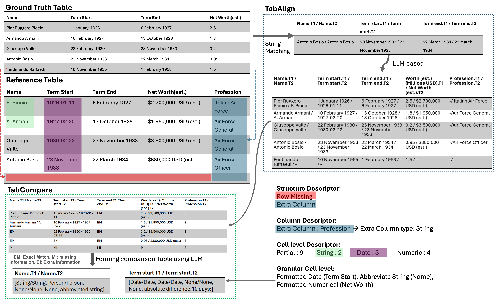
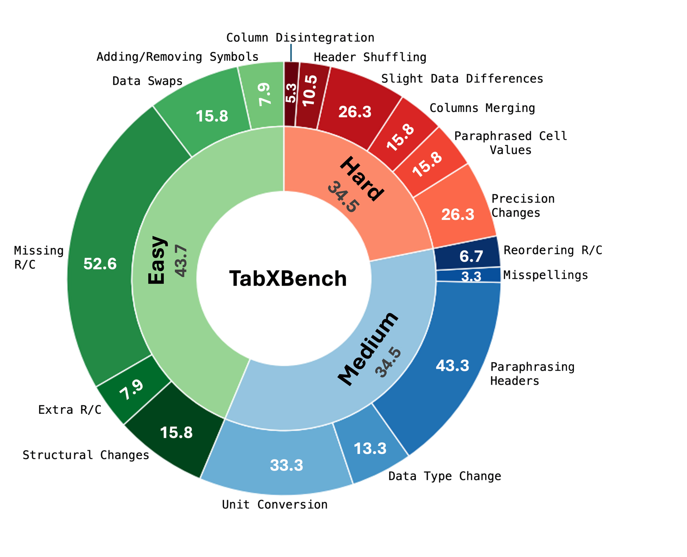

Evaluating tables qualitatively & quantitatively presents a significant challenge, as traditional metrics often fail to capture nuanced structural and content discrepancies. To address this, we introduce a novel, methodical rubric integrating multi-level structural descriptors with fine-grained contextual quantification, thereby establishing a robust foundation for comprehensive table comparison. Building on this foundation, we propose TabXEval, an eXhaustive and eXplainable two-phase evaluation framework. TabXEval initially aligns reference tables structurally via TabAlign & subsequently conducts a systematic semantic and syntactic comparison using TabCompare; this approach clarifies the evaluation process and pinpoints subtle discrepancies overlooked by conventional methods. The efficacy of this framework is assessed using TabXBench, a novel, diverse, multi-domain benchmark we developed, featuring realistic table perturbations and humanannotated assessments. Finally, a systematic analysis of existing evaluation methods through sensitivity-specificity trade-offs demonstrates the qualitative and quantitative effectiveness of TabXEval across diverse table-related tasks and domains, paving the way for future innovations in explainable table evaluation.


| Metrics | Spearman's | Kendall's | W-Kendall's | RBO | Spearman's |
|---|---|---|---|---|---|
| ρ ↑ | τ ↑ | τ† ↑ | ↑ | Footrule ↓ | |
| EM | 0.18 | 0.16 | 0.16 | 0.26 | 0.57 |
| chrF | 0.12 | 0.11 | 0.08 | 0.25 | 0.59 |
| H-Score | 0.14 | 0.11 | 0.09 | 0.28 | 0.51 |
| BERTScore | 0.19 | 0.15 | 0.13 | 0.25 | 0.57 |
| ROUGE-L | 0.21 | 0.18 | 0.40 | 0.27 | 0.53 |
| BLEURT | 0.29 | 0.25 | 0.25 | 0.27 | 0.51 |
| TabEval | -0.04 | -0.04 | -0.03 | 0.23 | 0.63 |
| P-Score | 0.30 | 0.27 | 0.24 | 0.31 | 0.39 |
| LLM rubric | 0.23 | 0.16 | 0.17 | 0.28 | 0.47 |
| LLM ranking | 0.29 | 0.24 | 0.23 | 0.30 | 0.41 |
| Multi-prompt | 0.29 | 0.24 | 0.23 | 0.30 | 0.42 |
| Multi-prompt + CoT | 0.30 | 0.25 | 0.24 | 0.29 | 0.45 |
| TabXEval | 0.44 | 0.40 | 0.38 | 0.34 | 0.29 |